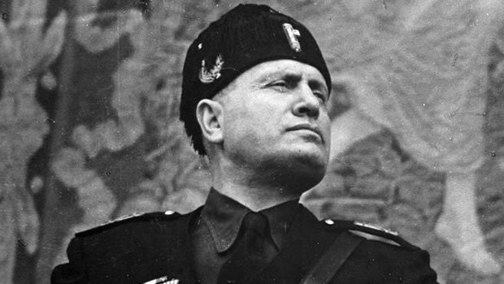
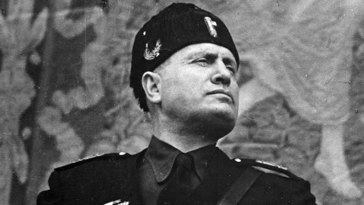

Mussolini Analysis
I want to focus on language-based visualizations because I want to eventually become comfortable examining language through a more visually-based medium. Since I eventually want to get into the field of Computational Linguistics, I want to augment my ability to visualize language data in a new way that a potential employer might not have considered in the past. Another related interest of mine is the collection and analysis of social media data and relationship mapping. Although similar to ‘plain’ language analysis, this branch of study will only continue to grow as more and more people communicate online. Trying to visualize these connections between people may be hard, but it would definitely be easier to analyze a visualization of these connections instead of a bunch of lines of text describing those relations. I would love to be able to build something like that! Lastly, I would love to figure out a way of integrating my love of news media. I don’t know necessarily how relevant the media is going to be in the future due to our new President’s views, but I still believe that free media is important. Maybe I could try and assemble a sentiment analysis visualization of sorts that could rank the feel of different articles. It sounds like a large project, but definitely something worth building. My main goal, however, is to figure out how to design something like the image on the right!
 
